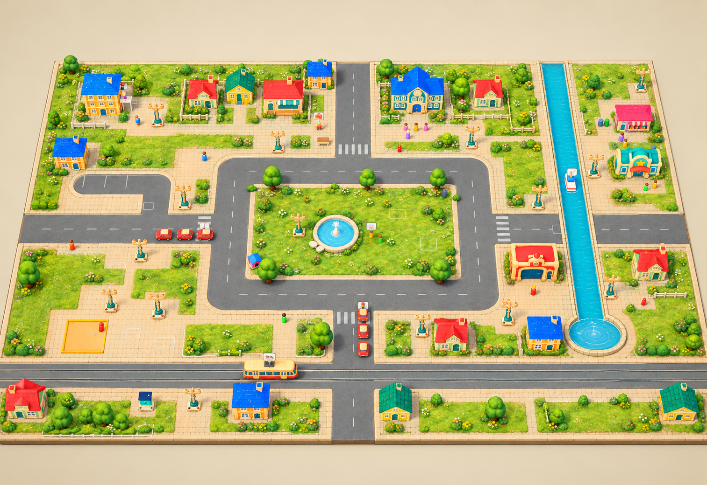
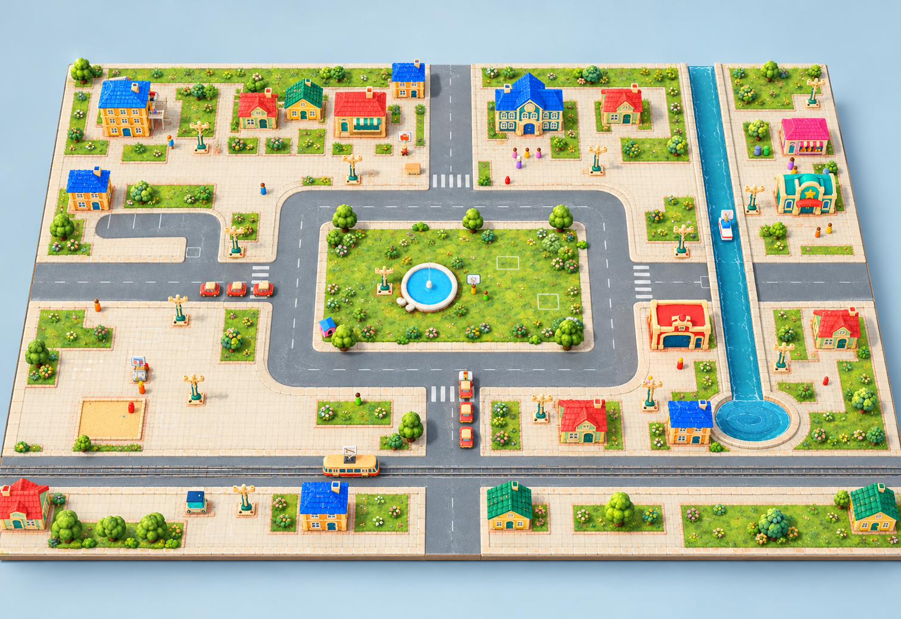
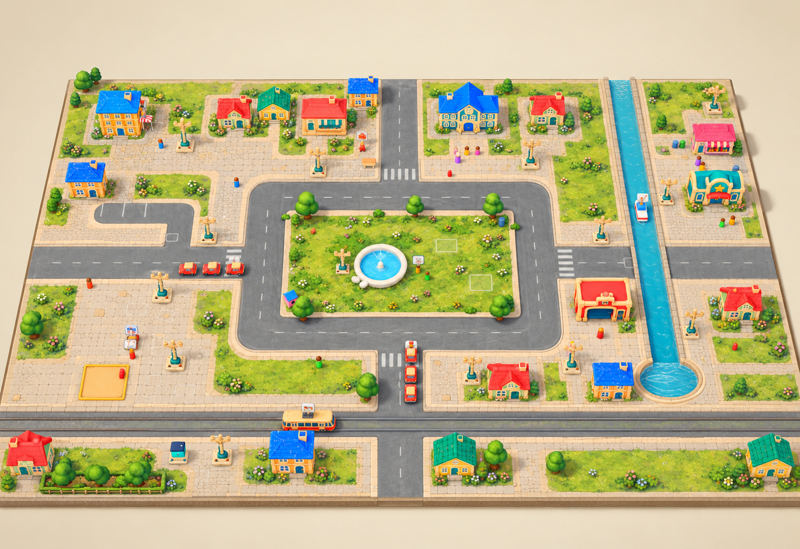

A · Тёплый садовый городМедовая плитка, тёплые дорожки, мягкая зелень. Ближе к оформлению фермы.
B · Город у водыСветлые дворы, сине-серый асфальт, прохладная вода. Более городской характер.
C · Спокойный сказочный городТёплый камень, шалфейная трава, приглушённые цвета. Самая мягкая палитра.